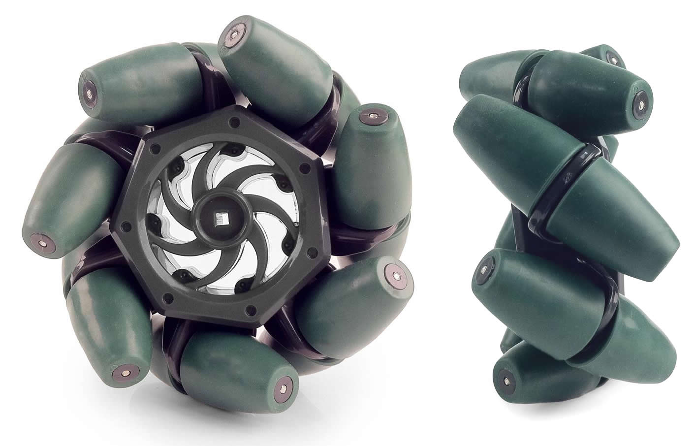

Mecanum wheels are fascinating,
so I built an RC car around them. Eventually, I plan to add more sensors and possibly a more powerful controller to make it a true robot with simultaneous localization and mapping (SLAM) and some other basic capabilities. For now, though, I wanted to focus on building the robot and perhaps putting my own "spin" on the wheel design.


I built the chassis first. To meet my requirements, it needed to be stiff and modular. If the chassis isn't stiff enough, the wheels may not interact with each other consistently, which leads to plenty of headaches on the software side. To stiffen it, I added an isogrid to the underside of the body. NASA published some interesting papers on isogrids in the 1980s but has since moved on to other methods. Although they're no longer used on spacecraft, I thought an isogrid was perfect for my small project. My second requirement was modularity, so that I could make changes without reprinting any large (35+ hour) parts. I achieved this with a grid of mounting holes in the chassis, so all manner of things can be mounted later.

With the frame printing, I turned to the wheels. After some research, I settled on a design and modeled it in CAD. After printing a test wheel and making a few tweaks, I added them to my growing print queue. If I were to do this again (and I might), I would reduce the wheel diameter or add a gear reduction. As it stands, I have to drive the steppers slowly to get enough torque to maneuver on carpet.

With the body complete, I moved on to the electronics. I chose chopper drivers designed specifically for stepper motors. I originally used some generic DC drivers I already had, but they were inconsistent at best and overheated quickly.


Once the components were assembled, I wrote the control software. My code is available on GitHub (link), but please don't look at it too closely. I was racing to finish it before the semester started, and it is not well commented or formatted. With the motors running and everything communicating properly, I added a Bluetooth receiver and set it up to take input from an app on my phone. Here is the final product:
I look forward to giving this robot more "brains," but first I need to make a few revisions. It drives on carpet, but less consistently than on tile, and I would like to fix that first. Smaller wheels or a simple gear reduction would be a good start. Mecanum wheels are also quite inefficient, losing a lot of energy to sliding friction. I have an idea for locking the rollers during simple maneuvers (driving forward and backward) and unlocking them for more complex movement. Locking the rollers could theoretically improve efficiency by 30%, and I believe that with proper path planning they could stay locked 80–90% of the time, resulting in significant energy savings.
Special thanks to An for helping with some bug fixes and being a great resource throughout this project.